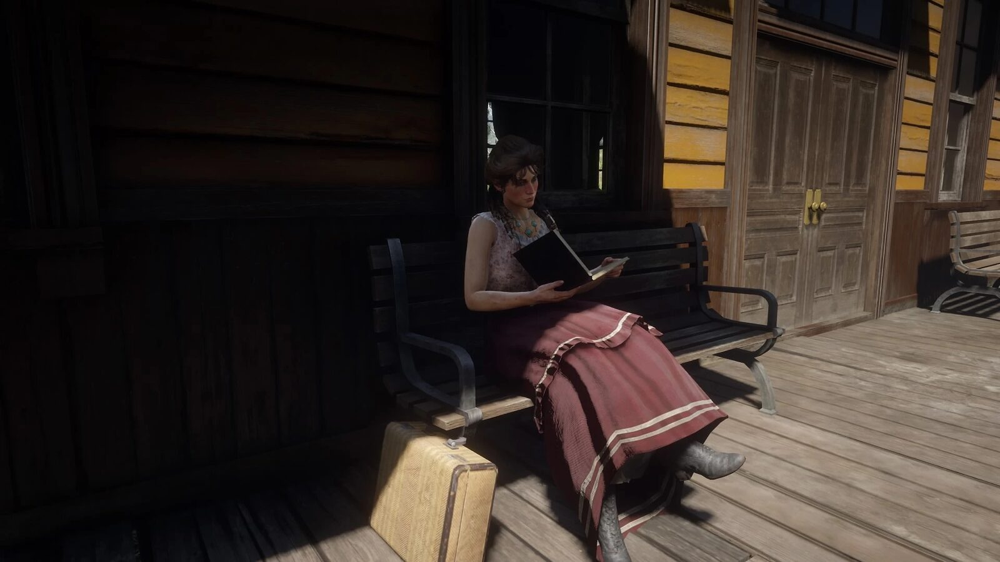
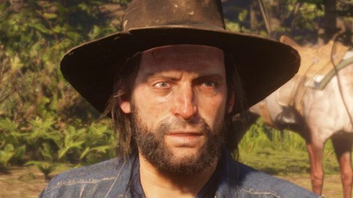
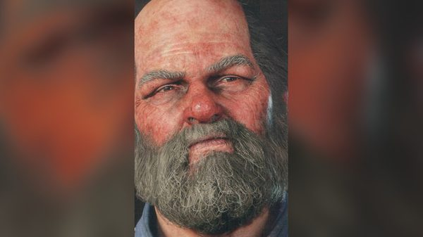
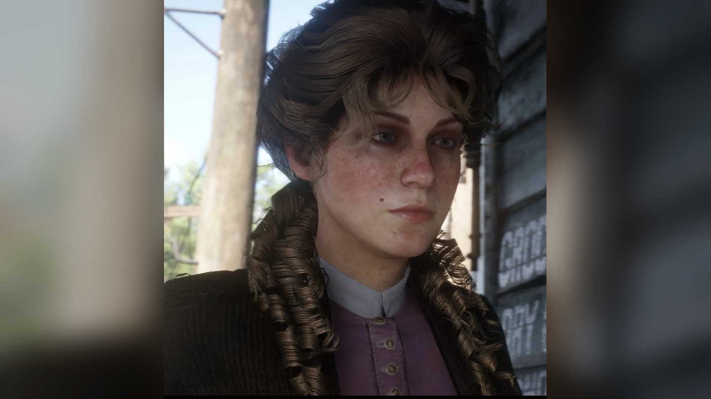
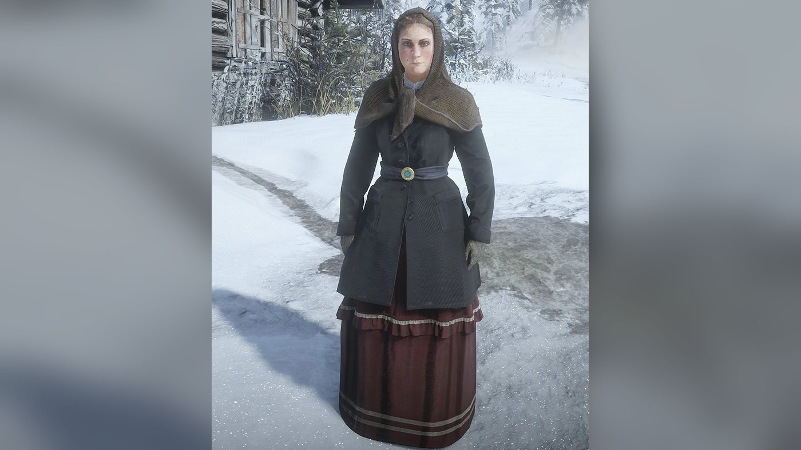
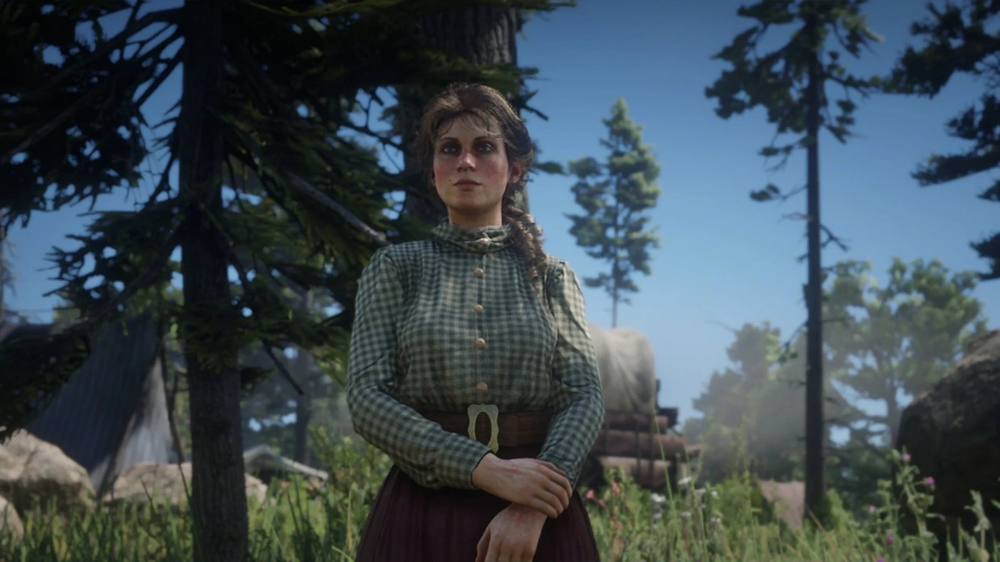
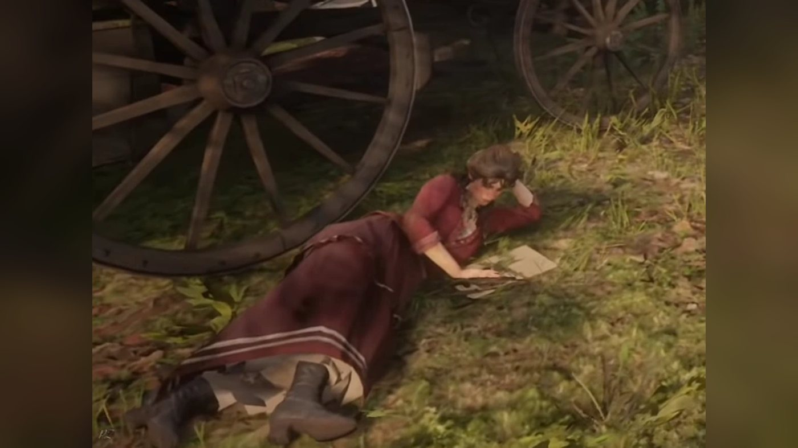
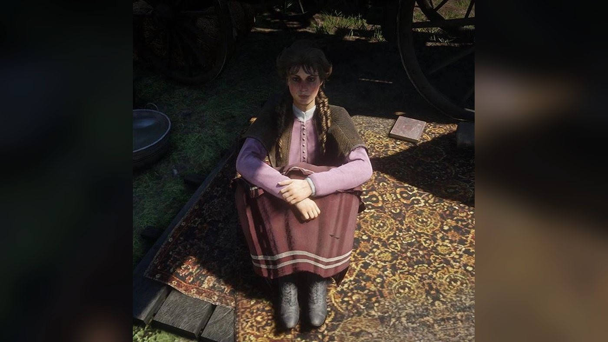
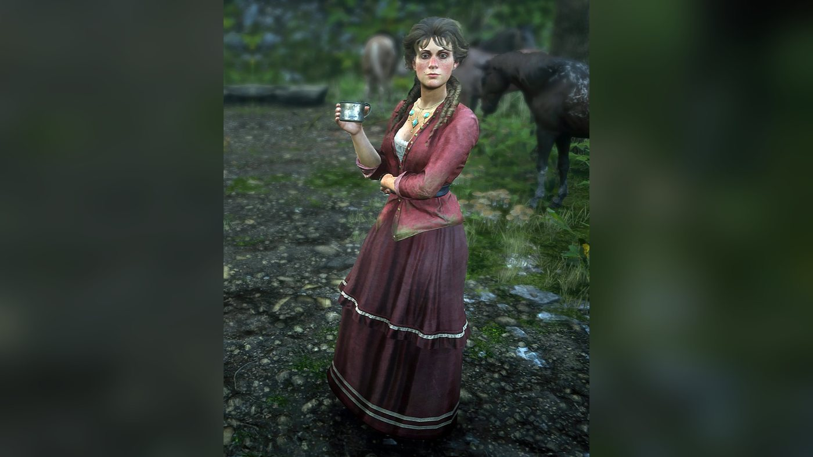
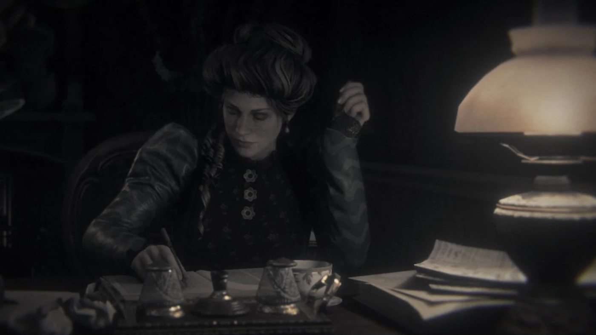

Character · Van der Linde gang
Mary-Beth Gaskill
Mary-Beth Gaskill is a supporting character of Red Dead Redemption 2 (2018), set in 1899. She is a young pickpocket of the Van der Linde gang who reads romance novels and wants to write her own. During the Horseshoe Overlook chapter she brings back from Valentine the lead on a train of wealthy passengers that the gang robs in "Pouring Forth Oil IV". She helps Arthur Morgan and Sean MacGuire rob a stagecoach, and she screams on recognizing the body of Kieran Duffy when the O'Driscolls send it back to Shady Belle. At Beaver Hollow Arthur can tell her that he is dying of tuberculosis. She leaves the gang before its end. By 1907 she publishes romance novels under the pen name Leslie Dupont, and John Marston can meet her at Valentine station.
She is played by Samantha Strelitz, an American actress.
- Name
- Mary-Beth Gaskill
- Pen name
- Leslie Dupont (1907)
- Born
- Not given in the game (according to the Red Dead Wiki, Arthur guesses she is 21 or 22, and she tells him it is rude to talk about her age)
- Family
- Her mother, who died of typhoid
- Status
- Alive in 1907
- Nationality
- American
- Affiliation
- Van der Linde gang (until 1899)
- Role
- Pickpocket and con artist; novelist by 1907
- Games
- Red Dead Redemption 2
- Voiced by
- Samantha Strelitz (voice and motion capture)
Biography
Origins
The games give no date of birth for Mary-Beth and do not say in which year she joined the Van der Linde gang. According to Wikipedia's summary of Rockstar's official guide (2018), her mother died of typhoid, after which Mary-Beth spent part of her childhood in an orphanage before running away to fend for herself. The Red Dead Wiki also gives typhoid as the cause of her mother's death, citing her conversation with Arthur Morgan at the start of "No, No and Thrice, No". Before 1899 she lived by picking pockets. According to the Red Dead Wiki, she ran into trouble after stealing watches and wallets from several men, and the gang came across her while those men were chasing her. The wiki places this account in the stagecoach robbery she carries out with Arthur and Sean MacGuire in chapter 3. She then joined the gang.
Red Dead Redemption 2 (1899)
Chapter 1: Colter
After the failed ferry robbery in Blackwater, the gang takes refuge in the snow at Colter, an abandoned mining town. In "Outlaws from the West", as soon as the group enters the main cabin, Susan Grimshaw tells Mary-Beth to get the fire going. In "Enter, Pursued by a Memory", Arthur comes in from the cold and finds her sitting by the fire with Tilly Jackson and Abigail Marston. In "Eastward Bound", as the gang loads the wagons to leave the mountains for Horseshoe Overlook, Susan scolds her for reading and orders her to put her book away and help. Her time in the Colter cabin, including her care for the newly widowed Sadie Adler, is covered in Relationships.
Chapter 2: Horseshoe Overlook
"Polite Society, Valentine Style" begins as Arthur wakes Uncle and suggests a trip to Valentine. Karen Jones asks Arthur to take her, Tilly and Mary-Beth along. Mary-Beth backs her up: the three have been stuck in camp for two weeks, and Karen is close to killing Miss Grimshaw. Arthur gives in, and the women sing a bawdy song on the wagon at Uncle's request. On the road, a driver loses his horses. If Arthur brings one back, Mary-Beth cheers him on and then tells him he has a heart, a small one, before calling Uncle a repulsive old lizard; Uncle protests that lizards have hearts. If Arthur refuses, she says she does not believe he is that cold, and answers with sarcasm when he boasts that he should have robbed and killed the man. Entering Valentine, she finds the town decent and says she is glad not to be back in the snow of the mountains.
In town, the women split up to look for leads while Arthur and Uncle go to the general store, then drink on the bench outside. Arthur dozes off after the whiskey and wakes as Mary-Beth walks up to them. She has slipped into a wealthy house by posing as a servant girl and has overheard that a train full of rich tourists will travel to Saint Denis, where they will board a ship for Brazil. The train, loaded with baggage, will cross deserted country at night near Scarlett Meadows to reach the docks in time for the tide. Uncle knows the area. Mary-Beth then tells Arthur that Karen and Tilly have gone to the hotel to pick up drunk men and rob them, and that they have been away a long time. She spots Tilly struggling with a man near the hotel and recognizes him as one of the Foreman boys. Arthur sends Tilly back to Uncle and Mary-Beth, then goes to fetch Karen at the Saints Hotel.
When the group is reunited in the street, Mary-Beth notices a man on horseback watching them. He claims he saw Arthur in Blackwater a few weeks earlier, then rides off. Arthur tells Uncle to take the women home and sets off after the man, Jimmy Brooks. Mary-Beth's tip comes back in "Pouring Forth Oil I": John Marston tells Arthur that Uncle passed on what Mary-Beth overheard about a train of wealthy passengers in Scarlett Meadows. John suggests stopping it with a wagon of oil on the tracks, and the plan ends with the robbery of the train in "Pouring Forth Oil IV". In "Who is Not Without Sin", Arthur can greet her while carrying a drunk Reverend Swanson through camp, and she has a line for the reverend (see Quotes). When Sean is brought back from the bounty hunters in "The First Shall Be Last", the gang throws a party, during which Arthur can dance with her (see Relationships).
Chapter 3: Clemens Point
After the gang moves to Clemens Point, on Flat Iron Lake in Lemoyne, Sean offers Arthur a companion activity: the robbery of a Boles Overland banking coach near Face Rock, in Scarlett Meadows. Sean brings Mary-Beth along as a decoy, which Arthur disapproves of. When the coach arrives, she stops it by pretending to have lost her memory. While the guards are busy with her, Arthur and Sean open fire on them with rifles from cover. If the player is too slow, a guard can grab Mary-Beth and hold her as a shield, and Arthur has to shoot him; Arthur can then ask her how she is. The driver, the co-driver and the guards are killed by Arthur and Sean. The three share the take of 305 dollars, of which the player receives 55. The activity is available from noon, after "Friends in Very Low Places", and disappears once "Blessed are the Peacemakers" is completed.
In "Blessed are the Peacemakers", the O'Driscolls capture Arthur during a supposed parley. He escapes, rides back to Clemens Point and collapses on arrival. Mary-Beth is the first to call out to him, followed by Karen and Dutch van der Linde, who calls for Miss Grimshaw and the reverend; Arthur is then carried to his tent. The Red Dead Wiki also lists her in "The Battle of Shady Belle", whose mission page and transcript do not name her. In that mission, the Pinkerton agents Andrew Milton and Edgar Ross come to Clemens Point, and Milton offers the others three days to disappear if Dutch gives himself up. The gang refuses and moves to Shady Belle, a plantation house near Saint Denis that Arthur and John have cleared of Lemoyne Raiders.
Chapter 4: Saint Denis
After Jack Marston is brought back from Angelo Bronte's mansion in "Angelo Bronte, A Man of Honor", the gang holds a party for his return at Shady Belle (see Relationships). Kieran Duffy disappears during that party, and Mary-Beth asks around camp where he is (see Relationships). "No, No and Thrice, No", a mission given by Mary-Beth and Susan according to its mission page, opens with Arthur and Mary-Beth sharing a cigarette in camp and talking about their pasts. Arthur can bring up Mary Linton, and Mary-Beth tells him that Mary was a fool. Susan interrupts them: the Foreman Brothers have taken Tilly to Radley's House. Susan arms herself and leaves with Arthur, and the two bring Tilly back. According to the Camp Events page, Mary-Beth, Tilly and Susan are unavailable in camp once this mission is unlocked.
"Horsemen, Apocalypses" opens with Dutch and Arthur planning the trolley station robbery suggested by Bronte. Dutch notices a strange rider coming into camp, and Mary-Beth screams when she recognizes Kieran: the O'Driscolls have beheaded him, gouged out his eyes and placed his head in his own hands. A large band of O'Driscolls attacks Shady Belle right after. During the fight, Mary-Beth takes cover inside the house with Leopold Strauss, Abigail, Jack and Susan, according to an image caption on the mission page. Her grief after Kieran's death is covered in Relationships. The chapter ends with the failed robbery of the Saint Denis bank, in which she takes no part.
Chapter 5: Guarma
Mary-Beth is not among the members stranded on Guarma after the Saint Denis robbery. She is heard in "A Fork in the Road", the mission in which a doctor in Saint Denis tells Arthur he has tuberculosis: if Arthur's honor is high, her remark about Mary Linton from "No, No and Thrice, No" is one of the lines he remembers during the mission. The Red Dead Wiki next lists her in "That's Murfree Country", at the end of the chapter, when the reunited gang settles in a cave at Beaver Hollow, in Roanoke Ridge. The mission page does not name her. During the move, Uncle arrives with a drunk Molly O'Shea, who claims she informed the Pinkertons about the Saint Denis job, and Susan kills her with a shotgun.
Chapter 6: Beaver Hollow
In "Visiting Hours", Arthur and Sadie break John out of Sisika Penitentiary. Back at Beaver Hollow, Arthur is resting when Mary-Beth wakes him to tell him that Dutch wants him to join Dutch and Micah Bell in Annesburg, which opens the next mission, "Just a Social Call". The Red Dead Wiki also lists her in "A Rage Unleashed", whose mission page does not name her. In this chapter, Arthur can tell her at camp that he is dying (see Relationships). Mary-Beth is no longer at the camp when "Our Best Selves" begins, and neither are Uncle, Simon Pearson and Karen. At the start of the mission, Dutch tells Arthur that Uncle, Pearson and Mary-Beth have run away and calls them cowards; Arthur answers that they just do not want to die. Her departure is not shown on screen, and she takes no part in the train robbery or in the collapse of the gang.
Her voice comes back in "Red Dead Redemption", the last mission played as Arthur. On his final ride to Beaver Hollow, if his honor is high, two of the lines he remembers come from their camp conversations: his own remark at Horseshoe Overlook that their time has pretty much passed, and her advice at Beaver Hollow, after he told her about his illness, to try to do the good thing. Her line plays only if that conversation took place.
Epilogue (1907)
Valentine station
By 1907, Mary-Beth publishes romance novels under the pen name Leslie Dupont. According to the Red Dead Wiki's Valentine Station page, John can find her waiting for a train on the platform at Valentine station during or after the epilogue. They talk about their new lives and about the old days. According to the wiki's page on Arthur's relationships, John tells her that Arthur saved his life and that he thinks of him every day, and she answers that she often thinks of Arthur too. She explains that she writes as Leslie Dupont. When the train comes in, she gives John a copy of one of her books, "The Lady of the Manor", and boards it. If the player gets on the same train, she cannot be found aboard.
Press and Tilly's letter
Her success also shows in the press of 1907. The article "Romance Novel Proves Best Seller", printed in the Blackwater Ledger No. 72, the New Hanover Gazette No. 37 and the Saint Denis Times No. 53, has a headline about the success of Leslie Dupont's fourth book. It reports that her novel "Lady of the Manor" is hard to find in bookshops because of its popularity, especially among young girls and the elderly, and that critics dislike her work. It describes her books as "lurid and steamy" and says many of her tales are claimed to come from "the author's torrid past", on which she has never commented. The article adds that she is said to have once kept company with outlaws on the frontier, rumors she has never confirmed. In a letter to Abigail and John found at Beecher's Hope after John meets Tilly in Saint Denis, Tilly writes that she still sees Mary-Beth and that her friend's career as a novelist both did and did not surprise her. The end credits, after "American Venom", show Mary-Beth writing at a desk in a room.
Personality
Rockstar Games introduced Mary-Beth on September 6, 2018 with a two-sentence description: "A kind, good-natured young woman, which makes her the perfect criminal. By the time people realize they've been duped, Mary-Beth is already on her way home with the money."
A character page from an official guide, reproduced on the Red Dead Wiki, opens with nearly the same two sentences. It adds that she "soon became known as the best pickpocket around" after running away from an orphanage (see Biography). It describes her as "Smarter and more perspicacious than she often lets on", and ends: "Mary-Beth likes to read and write and has dreams of becoming a novelist one day."
In camp she is most often seen reading a romance novel, and she is shy about it (see Relationships).
In her own words
On the road to Valentine in "Polite Society, Valentine Style", if Arthur helps a stranded driver catch his horse and Uncle mocks him for it, she answers: "It means you've got a heart. A small one perhaps, hidden deep inside, but a real one." If he refuses to help and boasts of being cold, she replies: "I don't believe you're quite that cold, Mr. Morgan." At Beaver Hollow, when Arthur tells her he is ill, she says: "Maybe it's a sign, Arthur... try... try to do the good thing." The Red Dead Wiki opens its page on her with this line.
Names
Her name is Mary-Beth Gaskill. Susan Grimshaw calls her "Miss Gaskill" when she hands out the jobs in "Outlaws from the West", and Tilly's 1907 letter writes her name "Mary Beth", without the hyphen. In the notebook kept at camp she signs her stories with invented names: "Mary Elizabeth Nom De Plume" for "The American Wilderness", "Lizzie Nom De Plume" for "A Frenchwoman on the Run" and "Marie la Crosette" for "A French Woman in Saint Denis". Nom de plume is the French term for a pen name. By 1907 she publishes under the pen name Leslie Dupont, the author named on "The Lady of the Manor" (see Biography).
Appearance
The guide's portrait shows a young woman with brown hair in ringlets, green eyes and freckles. In the 1907 credits, according to the Red Dead Wiki, she wears her hair in a topknot, with pearl earrings and a dark green floral dress.
Relationships

Arthur Morgan
Arthur is the gang member she talks to most. She rides with him to Valentine, is the first to call out to him when he collapses at Clemens Point after escaping the O'Driscolls, and smokes with him at Shady Belle before Susan brings news of Tilly's kidnapping (see Biography). At Horseshoe Overlook she asks what is on his mind; he says the time of outlaws has passed and that the gang can only wait to answer for its sins, and she tells him he is the only one in camp who understands how lost he is. According to the Red Dead Wiki, she also tells him in a camp conversation that her mother came from New Hanover, and the two talk about writing: stories for her, his journal for him.
At the party for Sean's return Arthur can dance with her while Dutch dances with Molly; the scene does not trigger if he is drunk. According to the wiki, she also comes to him to ask whether he has seen Mary. At Beaver Hollow he can tell her he has tuberculosis; she offers her sympathy and tells him he still has time to do good (see In her own words). The Red Dead Wiki notes that, apart from Charles Smith, she is the only gang member Arthur tells about his illness. In 1907 she tells John Marston that she often thinks of Arthur (see Biography).

Tilly Jackson
Tilly is her closest companion in camp. At Horseshoe Overlook Tilly asks what she is reading; Mary-Beth admits it is a romance and says she knows Tilly and Karen make fun of her for it. Tilly admits it, and admits too that they read the same books, and Mary-Beth promises to lend her this one, out of Karen's sight. Another day Mary-Beth wonders about the Moon and is annoyed that Tilly does not share her dreamy mood. At Clemens Point she and Karen listen to Tilly tell how Malcolm Foreman took her from her mother.
After Molly O'Shea's death, Mary-Beth tells Tilly she cannot get over it; according to the Red Dead Wiki, Tilly shows little sympathy. Tilly's 1907 letter says the two still see each other (see Biography).

Karen Jones
Karen shares the young women's chores and outings with her. At Horseshoe Overlook they agree that Valentine is not a romantic town, and Karen passes on a rumor of a curse laid on it by Native Americans after a massacre, which fascinates Mary-Beth. Sitting with Tilly, they talk about their lot: Karen says women like them were born poor into a world of men. At Clemens Point Mary-Beth hopes women will one day vote; Karen says men will not allow it and asks whom she would vote for, and Mary-Beth says there is no use talking about something that will never happen.
At Shady Belle they argue about Saint Denis: Karen says the city is built on dirt, Mary-Beth on memories, and Karen walks off. In another scene Mary-Beth says she stole a necklace in a mansion the week before; Karen admits that the city scares her, Mary-Beth finds it all romantic, and Karen calls her mad. At the party for Jack's return, when Karen vomits by Pearson's wagon, Mary-Beth tries to get her to bed and Karen tells her to leave her alone.

Kieran Duffy
At Horseshoe Overlook, right after Karen refuses Kieran a drink, Mary-Beth brings him water; he thanks her, and she tells him Karen is nice really. Once he is free, he twice joins her where she reads east of camp. In one scene he tells her she is very pretty and she finds him sweet; in another she asks whether he can read; he says no, and her remark that someone could teach him leaves him so flustered that he walks off.
After Kieran disappears during Jack's party, she asks Pearson and Miss Grimshaw where he is, and neither knows. She is the one who screams on recognizing his body in "Horsemen, Apocalypses" (see Biography). Afterward, according to the Red Dead Wiki, she tells Arthur that Kieran was a gentle soul who did not deserve this, calls his killers pigs and asks Arthur to make them pay, which he promises to do if he can; she also admits she had a soft spot for him.

Susan Grimshaw
Susan keeps after her about her reading. In "Eastward Bound" she tells her to put her book away and go help. At Horseshoe Overlook Susan tells Mary-Beth that she has killed people for betraying the gang; Mary-Beth asks whether reading counts as betrayal, and Susan answers that the problem is idleness, not reading. In another scene Mary-Beth says she has been working, and Susan slaps her and orders her to do more. Kaili Vernoff, who plays Susan, has described another scene between them (see Development and performance).

Dutch van der Linde
At Clemens Point, while she reads near the wagons, Dutch wants to know what the book is. She dismisses it as a silly romance; Dutch objects that romance is nothing of the kind and turns on the charm, under John's puzzled gaze. Arthur, if he passes by, can promise her to keep it to himself. Molly later holds this flirting against Dutch (see Molly O'Shea). In "Our Best Selves" Dutch counts her among the runaways he calls cowards (see Biography).

Molly O'Shea
At the party for Sean's return, while Uncle, Karen and Sean sing at the poker table, Dutch and Mary-Beth try to get Molly to join in. At Clemens Point Molly reproaches Dutch for his attentions to Mary-Beth and says she fears she has grown too old for him.

Sadie Adler
At Colter, most of the women gather in the cabin around Sadie, who is weeping for her murdered husband, and Mary-Beth is the one consoling her. She tells Arthur, if he comes over, that Sadie will pull through, and he agrees. She continues to console her at Horseshoe Overlook.

Sean MacGuire
Sean brings Mary-Beth along as the decoy on his coach robbery near Face Rock, against Arthur's wishes (see Biography). The party for his return is also where Arthur can dance with her (see Arthur Morgan).

Uncle
Uncle drives the wagon to Valentine with Mary-Beth, Karen and Tilly in "Polite Society, Valentine Style". On the way, she and Uncle trade insults over Arthur's help to a stranded driver (see Biography).

Simon Pearson
Asked where Kieran is, Pearson does not know and changes the subject to a shark he once watched devour several men.

Lenny Summers
According to the Red Dead Wiki, Lenny and Mary-Beth make fun of Pearson's cooking together, until Susan tells them to mind their manners because Pearson takes good care of them.

Josiah Trelawny
At Clemens Point Trelawny compliments her looks and makes a crow fly out of the book she is reading. Once he has gone, Karen calls him a devil, and Mary-Beth answers that he is a kind one.

Abigail Marston
At Colter Abigail sits by the fire with Mary-Beth and Tilly when Arthur comes in. Both women speak of Kieran's death after "Horsemen, Apocalypses".

Jack Marston
Mary-Beth is at the campfire with Dutch, Hosea, John, Abigail and the others when the gang welcomes Jack back to Shady Belle, after Javier's song. The Red Dead Wiki notes that, like most of the women of the gang, she has a soft spot for the boy.

Micah Bell
According to the French Red Dead Wiki's page on Micah Bell, Micah invites Mary-Beth to dance at the Clemens Point camp, and she turns him down. She has no scenes with him in the story missions.

John Marston
In the epilogue John can find her at Valentine station, where they talk about Arthur and she gives him one of her novels (see Biography).
Talents and camp life
Pickpocketing and cons
Mary-Beth is a pickpocket and a con artist rather than a gunwoman: the Red Dead Wiki lists no weapon for her, and she never fires a weapon in the story. Her two cons in the story, the servant-girl ruse in Valentine and the act of a woman who has lost her memory on Sean's coach robbery, are told in the Biography.
Reading and writing
Her notebook, kept at camp, holds her writing exercises; according to the Red Dead Wiki, new stories appear in it as the game goes on. The first two, a romance set in the Wild West and a tale of a French royal on the run, both break off into a sentence in which she calls the story "total tripe" or nonsense and turns on herself. The third, set in a misty Saint Denis, follows a nameless woman fleeing a French duke whose family is cursed.
Camp life and item request
She does chores with Tilly and Karen under Susan Grimshaw's orders, and is one of the camp members Arthur can play dominoes with, in chapters 2 and 4. In chapter 2 she can ask Arthur for a fountain pen: according to the Red Dead Wiki, she tells him she wishes she had her own room and a pen to write novels. The pen lies in a cabin at Osman Grove, near Emerald Station. The wiki adds that she gives Arthur a ring in return.
Missions
The English Red Dead Wiki lists fifteen story missions of Red Dead Redemption 2 for Mary-Beth, two of them as voice only and one as credits only, plus her epilogue encounter and one companion activity. The French Red Dead Wiki lists eleven of the same missions. The first table follows the English list and adds the missions in which she has a line in camp or is mentioned; the second covers the epilogue.
Red Dead Redemption 2, chapters 1 to 6
| Mission | Chapter | Mary-Beth's role |
|---|---|---|
| Outlaws from the West | 1. Colter | At Colter. Susan Grimshaw tells her to light the fire in the main cabin. |
| Enter, Pursued by a Memory | 1. Colter | Sits by the fire with Tilly and Abigail when Arthur comes in; no line. |
| Eastward Bound | 1. Colter | Told by Susan to put her book away and help load the wagons before the move to Horseshoe Overlook. |
| Polite Society, Valentine Style | 2. Horseshoe Overlook | Rides to Valentine with Arthur, Uncle, Karen and Tilly. Brings back the tip about a train of rich tourists and spots the Foreman man who grabs Tilly. |
| Who is Not Without Sin | 2. Horseshoe Overlook | At camp. Can answer if Arthur greets her while carrying a drunk Reverend Swanson to his tent. Not listed by the wiki. |
| Pouring Forth Oil I | 2. Horseshoe Overlook | Mentioned. John passes on her tip about the train, relayed by Uncle. Not listed by the wiki. |
| Coach Robbery (Sean MacGuire) | 3. Clemens Point | Companion activity. Stops a Boles Overland banking coach near Face Rock by pretending to have lost her memory, while Arthur and Sean shoot the escort. Take: 305 dollars, 55 for the player. |
| Blessed are the Peacemakers | 3. Clemens Point | At camp. First to call out to Arthur when he collapses after escaping the O'Driscolls, before Karen and Dutch. |
| The Battle of Shady Belle | 3. Clemens Point | Listed by the Red Dead Wiki; not named in the mission page or transcript. |
| Angelo Bronte, A Man of Honor | 4. Saint Denis | At camp for the party that celebrates Jack's return. |
| No, No and Thrice, No | 4. Saint Denis | Co-giver with Susan. Shares a cigarette with Arthur until Susan announces that Tilly has been kidnapped. |
| Horsemen, Apocalypses | 4. Saint Denis | Screams on recognizing Kieran Duffy's body, then takes cover in the house during the O'Driscoll attack. |
| A Fork in the Road | 5. Guarma | Voice only. With high honor, Arthur remembers her remark about Mary Linton. |
| That's Murfree Country | 5. Guarma | Listed by the Red Dead Wiki; not named in the mission page. |
| Visiting Hours | 6. Beaver Hollow | After John's rescue, wakes Arthur to tell him Dutch wants him in Annesburg. |
| A Rage Unleashed | 6. Beaver Hollow | Listed by the Red Dead Wiki; not named in the mission page. |
| Our Best Selves | 6. Beaver Hollow | Absent. Dutch names her, with Uncle and Pearson, among the cowards who have run off. Not listed by the wiki. |
| Red Dead Redemption | 6. Beaver Hollow | Voice only. With high honor, Arthur remembers two lines from their camp conversations on his last ride. |
Red Dead Redemption 2, epilogue
| Mission or document | Chapter | Mary-Beth's role |
|---|---|---|
| Encounter at Valentine station | Epilogue | Talks with John on the platform, gives him a copy of "The Lady of the Manor" and boards a train. |
| Romance Novel Proves Best Seller | Epilogue | Newspaper article on the success of Leslie Dupont, her pen name. |
| Letter from Tilly | Epilogue 2: Beecher's Hope | Tilly writes to Abigail and John that she still sees Mary-Beth, now a novelist. |
| American Venom | Epilogue 2: Beecher's Hope | Credits only. The end credits show her writing at a desk. |
Quotes
The lines below are given as spoken in the game, in the original English, with the mission and the context. Her camp lines are given in other sections of this profile.
Valentine, chapter 2
We're bored out of our minds. Been cooped up here for two weeks now. Karen's about ready to murder Grimshaw.
Polite Society, Valentine Style (RDR2, chapter 2), to Arthur, backing up Karen's request to come alongLook at all that snow on the mountains. Sure don't want to be back up there.
Polite Society, Valentine Style (RDR2, chapter 2), arriving in ValentineGentlemen. I think I've got something good. I snuck into this fancy house... and acted like a servant girl... usually works.
Polite Society, Valentine Style (RDR2, chapter 2), joining Arthur and Uncle on the bench outside the general storeTrain full of rich tourists, heading to Saint Denis... and then cruising off to Brazil.
Polite Society, Valentine Style (RDR2, chapter 2), describing the tip she overheardOh, there's Tilly over there... that does not look ideal.
Polite Society, Valentine Style (RDR2, chapter 2), spotting Tilly in a struggle near the hotel. She adds: "That's one of them Foreman boys."Hey, who's that guy over there looking at us?
Polite Society, Valentine Style (RDR2, chapter 2), noticing Jimmy Brooks, who then claims he saw Arthur in Blackwater
At camp and Shady Belle, chapters 2 and 4
Oh, Reverend...
Who is Not Without Sin (RDR2, chapter 2), if Arthur greets her while carrying a drunk Reverend Swanson through campWell, she was a fool then, Arthur.
No, No and Thrice, No (RDR2, chapter 4), about Mary Linton, at the start of the mission. Arthur remembers the line in A Fork in the Road if his honor is high.
Said about her
Miss Gaskill... get that fire lit quick.
Susan Grimshaw, Outlaws from the West (RDR2, chapter 1), on entering the Colter cabinOh, for Lord's sake. Put that book away and go help. Oh... Mary-Beth.
Susan Grimshaw, Eastward Bound (RDR2, chapter 1), as the gang loads the wagons to leave ColterMary-Beth overheard something about a train... full of wealthy folk...
John Marston to Arthur, Pouring Forth Oil I (RDR2, chapter 2)I still see my darling Mary Beth, who is now a lady novelist which both surprised me and did not surprise me at all, if that makes any sense.
Tilly Jackson, letter to Abigail and John Marston (RDR2, epilogue 2, 1907), signed "Yours, Tilly"Overnight success. Author Leslie Dupont's fourth tome proving very successful.
Headline of the article "Romance Novel Proves Best Seller" (RDR2, epilogue, 1907), printed in capitals in the Blackwater Ledger, the New Hanover Gazette and the Saint Denis Times
Development and performance
Casting
Mary-Beth is played by Samantha Strelitz, an American actress born in 1986 according to the Red Dead Wiki, which says she was cast as both the voice and the motion capture performer for the character. On television she appeared in the pilot episode of the HBO series Vinyl, aired in February 2016; the wiki also credits her in DieRy. In an episode of the Long Beach Post podcast "Can You Hear Me, Long Beach?", published on August 29, 2019, Steve Lowery presented her as a Long Beach native who now lives in New York, and noted that the game had led her to a second career as a gaming commentator. That weekend she made her first appearance at Long Beach Comic Con, where on September 1, 2019 she sat on a performance capture panel with Penny O'Brien (Molly O'Shea) and Steve J. Palmer (Bill Williamson).
Rockstar recorded the cast's performances with motion capture, with cameras filming the actors' faces for animation, according to Wikipedia's list of the game's characters. The same list, summarizing a video interview with The Nerd Soapbox published on September 3, 2019, says Strelitz worked on the game for around three to four years.
Interviews
Wikipedia's list of the game's characters summarizes several of her interviews. On the Long Beach Post podcast she described Mary-Beth as a sweet girl who "gets lost in the world of her books". On the We're All Psychos Podcast, in an episode released on March 15, 2019, she called her "the Danielle Steel of 1899" because of her love of romance novels.
In a GamesRadar+ feature by Rachel Weber, published on March 7, 2019, in which the actresses of the gang look back on the shoot, Strelitz singled out a scene she played with Kaili Vernoff, who plays Susan Grimshaw: "it's about vanity and it's about ageing and it's about these two women struggling with how they connect with each other, and how they connect with women." She also said she is "always very overwhelmed" when she sees the scene in which Arthur tells Mary-Beth that he is dying. Part of her wished she had known, while shooting it, how much the scene would weigh for players, she said, while another part loved "such an innocence to that scene", asking: "if someone tells you that how do you even take that all in?"
Kaili Vernoff described a scene between Susan and Mary-Beth to Josh Wilding of GameFragger, in an interview published on February 21, 2019: Susan catches Mary-Beth looking at herself in a mirror and tells her that vanity will get her nowhere, with the line "Time will get you too and they'll stop looking." Vernoff said it showed why Susan is so hard on the younger women. In an interview with Heather Newman of Forbes, published on February 12, 2019, Vernoff named Strelitz, Meeya Davis (Tilly) and Jo Armeniox (Karen) as the actresses she worked with most closely and said they still spoke "almost daily".
Cut content
The Red Dead Wiki lists unused assets for Mary-Beth in the game files: three hairstyles, a head model and two sets of eyelashes. The files also name a cut item request labeled only "as", whose meaning is unknown. She also takes part in an unused camp encounter in which Susan tells the young women that Karen stormed off the night before; the wiki doubts the scene can ever play, because Karen and Mary-Beth are gone from the gang at the same point in the story. Concept art published by the wiki shows Mary-Beth with Bill, Karen, Tilly, Uncle, Strauss and Pearson.
Reception
Game Informer ranking
In Game Informer's staff ranking of the 24 members of the Van der Linde gang, published on December 27, 2018, Mary-Beth comes 13th, one place ahead of Karen. The staff acknowledged that her "quiet demeanor and absence during the story missions" might make the ranking surprising, but wrote that players who talk to her in their free time "will know she's secretly one of the most interesting characters for Arthur to interact with". They described her as "A con woman who's sweet on Arthur", said their conversations "have an honest, gentle quality to them" and mentioned the dance the two can share at a party. They called her epilogue scene, in which John learns she has become a successful novelist, her best moment: "A necessary bright spot in this epic, dark tale."
Other media and legacy
Marketing
Rockstar released official artwork of Mary-Beth for Red Dead Redemption 2. On September 6, 2018, it posted her portrait and character description (quoted under Personality) on Twitter, in a series covering the members of the gang; The Hollywood Reporter reproduced the series on September 7, 2018. The same descriptions appear on a page of Rockstar's website presenting the Van der Linde gang; the French version, cited by the French Red Dead Wiki, was archived on July 6, 2022. In the composite image of the 23 gang members that opens Wikipedia's list of the game's characters, Mary-Beth stands in the front row, between Molly and Karen.
Trivia
- The Red Dead Wiki gives the text of chapter 6 of "The Lady of the Manor", titled "A Twist of the Knife of Time". In it, Susan Grade, Lady of Leicester, faces David Vincent, a highwayman known as the Black Knight, who has killed her husband, while a police inspector, Mr. Mellon, waits outside. Vincent puts her yellow silk gown on a mop and holds it out of the window, where it draws five shots, then leads her away across the castle rooftops.
- The in-game description of "The Lady of the Manor" calls it an audacious new romance by Leslie Dupont.
- The coach driver and co-driver of the Coach Robbery are named Laurence and Harry on the Red Dead Wiki.
- Attacking, killing or abandoning Mary-Beth fails "Polite Society, Valentine Style", as it does for Uncle, Tilly and Karen. In "Horsemen, Apocalypses", the mission fails if any member of the gang is attacked, abandoned or killed.
Gallery






